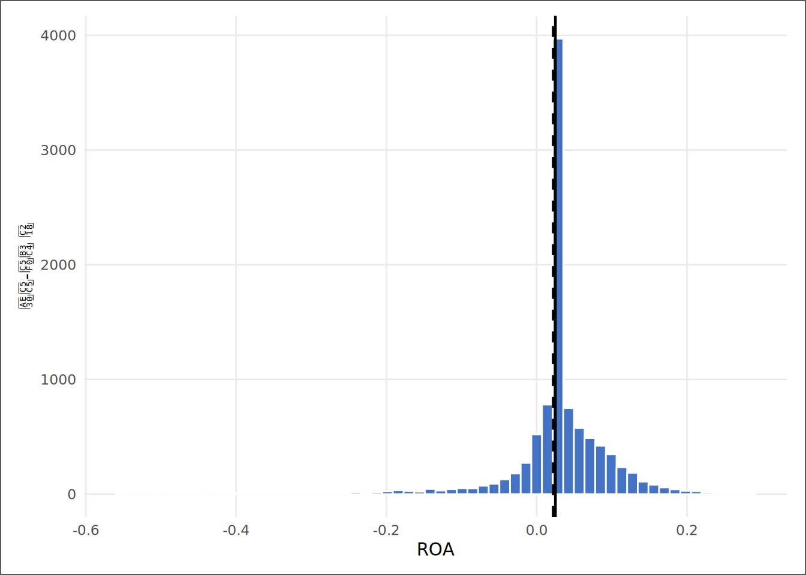
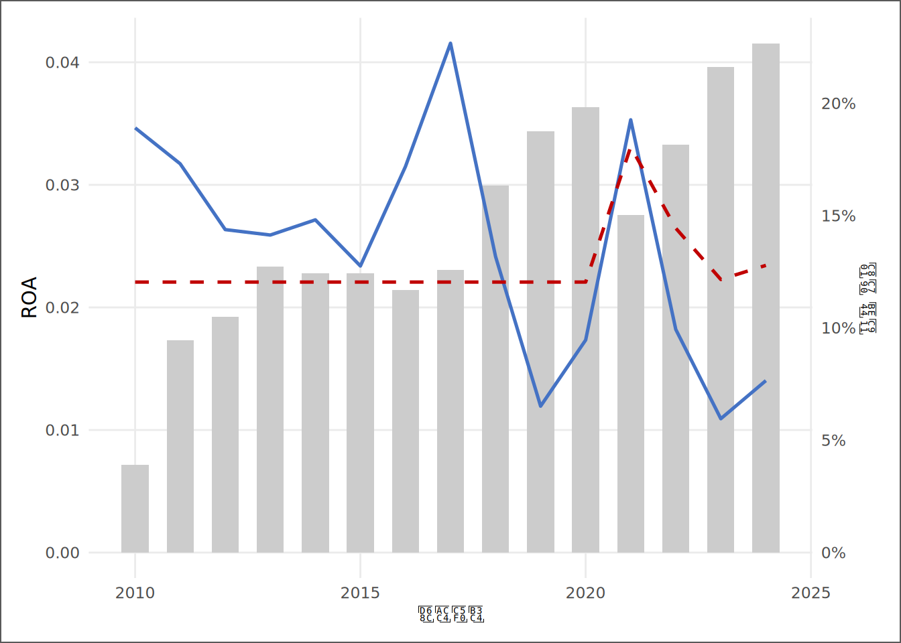

# | 키워드 | 한 줄 핵심 |
|---|---|---|
1 | 가설적 사고 (Hypothesis-driven) | 질문을 먼저 세우고 데이터로 검증한다 — 순서가 결과를 결정한다 |
2 | 데이터 마이닝의 함정 | 질문 없이 데이터를 뒤지면 우연을 발견이라 착각하게 된다 |
3 | 분석 알고리즘 5단계 | 현상 → 문제 정의 → 분해 → 원인 → 해결, 모든 분석의 공통 골격 |
4 | 제1원칙 사고 (First Principles) | 관행과 비유를 걷어내고 더 쪼갤 수 없는 사실에서 다시 쌓는다 |
5 | Zero-to-One 관점 | 남들이 이미 아는 것(1→n)이 아니라 아무도 검증하지 않은 것(0→1)을 묻는다 |
6 | 평균의 함정 (분해의 기술) | 집계값은 합성의 결과다 — 분해하기 전까지 평균을 믿지 마라 |
7 | LLM과의 사고 협업 | AI에게 계산과 반론을 맡기고, 질문과 판단은 분석가가 쥔다 |
혁신적 사고와 분석 알고리즘 — 같은 데이터, 다른 결론
“제1원칙은 자기 자신을 속이지 않는 것이다. 그리고 가장 속이기 쉬운 사람이 바로 자기 자신이다.” — Richard Feynman
사례로 시작하기
두 분석가에게 같은 데이터를 준다. 수천 개 상장기업의 수익성 패널이다.
첫 번째 분석가는 곧장 평균을 구한다. “평균 ROA입니다.” 보고는 정확하고, 빠르고, 그리고 아무 쓸모가 없다. 두 번째 분석가는 계산하기 전에 묻는다. “이 평균은 어떻게 만들어졌는가? 누가 끌어올리고 누가 끌어내리는가? 평균이라는 한 숫자가 감추는 것은 무엇인가?” 같은 데이터에서 첫 번째 분석가는 숫자를 얻고, 두 번째 분석가는 구조를 얻는다.
차이는 도구가 아니다. 두 사람 모두 같은 R, 같은 함수를 쓴다. 차이는 계산보다 먼저 작동하는 사고의 알고리즘이다. 전 장(1장)에서 분석 환경을 갖췄다면, 이 장은 그 환경 위에서 돌아갈 운영체제 — 질문을 세우고, 분해하고, 검증하는 사고 절차 — 를 설치한다. 이 절차는 한 번 익히면 데이터가 바뀌어도, 도구가 바뀌어도, 심지어 AI가 분석의 절반을 대신해 주는 환경에서도 그대로 작동한다. 아니, AI 시대일수록 더 중요해진다. AI는 계산을 대신하지만 무엇을 물을지는 대신하지 못하기 때문이다.
핵심 키워드
학습 목표
이 장을 마치면 다음 다섯 가지를 할 수 있다.
- 가설적 사고와 데이터 마이닝의 차이를 설명하고, 자신의 분석이 어느 쪽인지 판별할 수 있다.
- 분석 알고리즘 5단계(현상→문제 정의→분해→원인→해결)를 임의의 비즈니스 질문에 적용할 수 있다.
- 평균과 중앙값의 괴리에서 분포의 비대칭을 읽고, 집계값을 구성 요소로 분해할 수 있다.
- 제1원칙 사고와 Zero-to-One 관점으로 “남들이 묻지 않은 질문”을 만들 수 있다.
- LLM에게 질문 후보 생성과 반증을 맡기되, 최종 판단 기준을 스스로 보유할 수 있다.
D→I→K→W 4단계 파이프라인
| 단계 | 이 장에서의 모습 |
|---|---|
| 데이터 (D) | 기업-연도 패널의 ROA 수만 건 — 그 자체로는 숫자 더미 |
| 정보 (I) | 평균 ROA, 중앙값 ROA — 요약됐지만 아직 “왜”가 없다 |
| 지식 (K) | 평균과 중앙값이 다른 이유 — 꼬리가 평균을 인질로 잡고 있다 |
| 지혜 (W) | “포트폴리오 점검은 평균이 아니라 꼬리부터” — 행동을 바꾸는 원칙 |
데이터 출처와 수집
데이터 | 출처 | 이 장의 역할 |
|---|---|---|
기업-연도 수익성 패널 | DataGuide 5.0 — 3장에서 구축하는 SSOT의 완성본 | 사고 5단계를 연습할 실전 재료 |
적자 더미·파생변수 | 5장 피처 엔지니어링 산출(Loss_Dummy, Size 등) | 분해 분석의 칼날 |
이 장은 3~5장에서 만들게 될 SSOT 데이터셋의 완성본을 미리 가져다 쓴다. 순서가 뒤집힌 것이 아니다 — 사고법을 먼저 장착해야 3장부터의 데이터 작업이 “무엇을 위해” 하는 일인지 보이기 때문이다. 데이터를 직접 만드는 법은 3장에서 배운다.
천재들의 생각법 — 세 사람, 세 개의 무기
분석의 사고법은 발명할 필요가 없다. 이미 검증된 사람들의 것을 훔치면 된다.
인물 | 무기 | 핵심 질문 | 재무분석 번역 |
|---|---|---|---|
Richard Feynman | 설명 가능성 검증 | 이것을 신입에게 가장 단순한 말로 설명할 수 있는가? 못 하면 모르는 것이다 | 내 분석 결과를 비전공 임원에게 세 문장으로 설명할 수 있는가 |
Elon Musk | 제1원칙 분해 | 이 믿음은 물리 법칙인가, 관행인가? 관행이면 의심하라 | '이 비율이 업계 표준'이라는 말의 근거 데이터는 무엇인가 |
Francis Galton | 측정과 회귀 | 느낌이 아니라 측정 — 극단값 다음에는 평균으로의 회귀가 온다 | 이번 분기의 극단적 성과는 실력인가, 평균 회귀를 기다리는 운인가 |
Feynman의 검증법은 분석 보고서의 품질 검사기다. 표와 그림을 만들고도 그 의미를 세 문장으로 말하지 못한다면, 분석은 끝나지 않은 것이다. Musk의 제1원칙은 분석 설계의 출발점이다. “ROA가 낮은 기업은 피해야 한다”는 관행적 믿음을 분해해 보라 — ROA가 낮은 이유가 일시적 투자 때문이라면 그 기업은 오히려 기회다. Galton의 회귀는 시계열을 읽는 기본기다. 그해의 스타 펀드가 이듬해에도 살아남을 확률은, 생각보다 평균에 가깝다.
세 무기의 공통점은 하나다. 확신이 강할수록 자기 자신부터 의심한다. 이 장의 첫머리에 Feynman의 문장을 둔 이유다.
분석 알고리즘 5단계
천재들의 무기를 매일 쓸 수 있는 절차로 바꾸면 다섯 단계가 된다.
단계 | 이름 | 하는 일 | 이 장의 실습 |
|---|---|---|---|
1단계 | 현상 (What) | 관찰된 사실을 한 문장으로 — 해석 없이, 숫자로 | 전체 평균 ROA를 측정한다 |
2단계 | 문제 정의 (Which) | 그 현상의 어느 부분이 진짜 문제인지 좁힌다 | 평균과 중앙값이 왜 다른가를 문제로 정의한다 |
3단계 | 분해 (Break-down) | 집계값을 구성 요소로 쪼갠다 — 집단별, 시점별, 분포별 | 적자/흑자, 연도별로 평균을 분해한다 |
4단계 | 원인 (Why) | 분해 결과에서 패턴을 읽고 검증 가능한 가설을 세운다 | 왼쪽 꼬리(적자 기업)가 평균을 끌어내린다는 가설을 검증한다 |
5단계 | 해결 (So-what) | 행동으로 연결한다 — 무엇을 바꾸고, 무엇을 더 봐야 하는가 | 점검 지표를 '평균'에서 '적자 비중'으로 교체할 것을 제안한다 |
순서가 곧 규율이다. 많은 분석가들이 빠지는 함정은 1단계에서 5단계로 점프하는 것 — 평균 하나 보고 곧장 처방을 내리는 것이다. 반대 함정은 질문 없이 3단계만 무한 반복하는 것, 즉 데이터 마이닝이다. 수천 개 변수를 그리다 보면 무언가는 반드시 “패턴처럼” 보인다. 가설 없이 발견한 패턴은 발견이 아니라 우연의 수집이다.
실전 — 평균 ROA의 해부
KG Asset의 신입 분석가 김자산에게 떨어진 두 번째 임무로 5단계를 실제로 돌려 본다. 팀장의 질문은 짧다. “우리 시장 전체의 수익성, 한 장으로 정리해 봐. 단, 평균 하나 들고 오면 돌려보낸다.”
1단계 — 현상: 측정부터
# ① SSOT 데이터 적재 (경로는 setup에서 ssot_path로 확정)
ssot <- read_book_csv(ssot_path)
# ② 분석 표본: 수익성(ROA)과 적자 더미가 있는 기업-연도
panel <- ssot |>
dplyr::select(코드, 코드명, 회계연도, ROA, Loss_Dummy, Size) |>
tidyr::drop_na(ROA, Loss_Dummy)
# ③ 1단계(현상): 전체 평균과 중앙값
roa_mean <- mean(panel$ROA)
roa_median <- median(panel$ROA)코드 읽기. 세 덩어리로 읽으면 된다. ①에서 read_book_csv()가 CSV 파일을 읽어 표 형태의 데이터프레임으로 만들고, <-가 결과에 ssot라는 이름을 붙인다 — <-는 “오른쪽 결과를 왼쪽 이름에 저장하라”는 R의 할당 연산자다. ②의 |>는 파이프 연산자로, 왼쪽 결과를 오른쪽 함수에 재료로 넘긴다 — “ssot를 받아서, 필요한 열만 고르고(select), 분석 변수에 결측이 있는 행을 제거한다(drop_na).” 필요한 열만 남기는 이유는 단순하다 — 이 장의 질문에 무관한 수백 개 열이 메모리와 코드를 채우지 않도록 경계를 긋는 것이다. ③은 mean()과 median()으로 전체 ROA의 평균과 중앙값을 각각 계산한다 — 두 값을 동시에 들여다봐야 하는 이유가 곧 이 장의 질문이다.
표본은 2010년부터 2024년까지 기업 667개사, 관측치 10,000건. 측정 결과 — 평균 ROA는 0.0249, 중앙값 ROA는 0.0221이다. 여기까지가 “현상”이다. 첫 번째 분석가는 여기서 보고서를 쓴다.
2단계 — 문제 정의: 평균과 중앙값은 왜 다른가
두 번째 분석가는 두 숫자의 간격을 본다. 평균이 중앙값보다 0.0029만큼 높다. 분포가 대칭이라면 두 값은 거의 같아야 한다. 다르다는 것은 분포가 한쪽으로 기울었다는 뜻이고, 오른쪽으로 긴 꼬리(소수의 큰 흑자)가 평균을 끌어올리고 있다는 신호다. 그렇다면 문제를 이렇게 다시 정의할 수 있다 — “시장의 수익성은 얼마인가”가 아니라 “전형적인 기업의 수익성과, 그것을 왜곡하는 꼬리는 각각 얼마인가.”

3·4단계 — 분해와 원인: 꼬리의 정체
가설은 이미 섰다. “꼬리의 정체는 적자 기업이다.” 검증은 분해다 — 적자(Loss_Dummy=1)와 흑자 집단으로 나누고, 적자 기업을 제외했을 때 평균이 어디로 가는지 본다.
# ① 집단 구분: Loss_Dummy로 적자/흑자 레이블 부여
decomp <- panel |>
dplyr::mutate(집단 = ifelse(Loss_Dummy == 1, "적자 기업", "흑자 기업")) |>
dplyr::group_by(집단) |> # ② 집단별로 묶고
dplyr::summarise( # ③ 네 가지 요약 통계를 동시에 계산
관측치 = dplyr::n(),
비중 = dplyr::n() / nrow(panel),
평균_ROA = mean(ROA),
중앙값_ROA = median(ROA)
)
# ④ 원인 검증: 적자 기업을 제외하면 평균은 어디로 가는가
roa_mean_ex <- panel |> dplyr::filter(Loss_Dummy == 0) |> dplyr::pull(ROA) |> mean()코드 읽기. 두 묶음으로 읽으면 된다. ①에서 ifelse(Loss_Dummy == 1, "적자 기업", "흑자 기업")는 손실 더미가 1이면 “적자 기업”, 0이면 “흑자 기업”이라는 레이블을 새 열(집단)로 붙인다. 이어진 ②의 group_by(집단)이 “집단 기준으로 묶어라”, ③의 summarise()가 “각 묶음에서 이 값들을 구해라”는 지시다 — dplyr::n()은 묶음 안의 행 수, 즉 관측치 수를 셈한다. ④는 흑자 기업(Loss_Dummy == 0)만 filter()로 걸러낸 뒤, pull(ROA)로 ROA 열을 벡터로 꺼내 평균을 계산한다. 이 한 줄이 “적자를 걷어냈을 때 시장 평균이 어디로 이동하는가”를 보여주는 대조 실험이다.
집단 | 관측치 | 비중 | 평균_ROA | 중앙값_ROA |
|---|---|---|---|---|
적자 기업 | 1,454 | 14.5% | -0.1183 | -0.0457 |
흑자 기업 | 8,546 | 85.5% | 0.0493 | 0.0221 |
분해가 모든 것을 드러낸다. 전체 관측치의 14.5%를 차지하는 적자 기업의 평균 ROA는 -0.1183 — 흑자 기업(0.0493)과는 완전히 다른 세계다. 적자 기업을 제외하면 시장 평균은 0.0249에서 0.0493로 0.0244만큼 이동한다. 즉 “시장 평균 ROA”라는 한 숫자는 서로 다른 두 분포의 가중평균이었다. 평균은 측정값이 아니라 합성의 결과다 — 이것이 이 장에서 가장 비싼 한 문장이다.
# ① 분해의 두 번째 축: 연도별 집계 (집단 → 시간으로 기준 전환)
yearly <- panel |>
dplyr::group_by(회계연도) |> # ② 연도 단위로 묶고
dplyr::summarise(
평균_ROA = mean(ROA), # ③ 세 지표를 동시에 계산
중앙값_ROA = median(ROA),
적자_비중 = mean(Loss_Dummy) # ④ 더미의 평균 = 해당 범주의 비율
)코드 읽기. 앞 블록과 구조가 같지만 group_by의 기준이 집단에서 회계연도로 바뀌었다 — 분해의 축을 “누가(집단)”에서 “언제(시간)”로 전환하는 것이 이 한 단어의 차이다. ④의 mean(Loss_Dummy)가 핵심이다. 0과 1로만 이루어진 더미 변수의 평균은 1의 비율, 즉 그 해 표본에서 적자 기업이 차지하는 비중과 같다 — 이진 변수의 평균은 해당 범주의 비율이라는 단순하지만 자주 써먹는 성질이다. 이 세 줄의 집계 결과가 “시장 전체의 수익성 추이”를 한 번에 요약한다.

연도 축의 분해는 또 하나의 통찰을 준다. 평균 ROA가 크게 출렁이는 해는 대개 적자 비중이 함께 움직인다 — 시장의 “수익성 악화”는 모두가 조금씩 나빠진 것일 수도, 일부가 크게 무너진 것일 수도 있으며, 둘은 전혀 다른 투자 판단을 요구한다. 전자라면 시장 전체의 문제고, 후자라면 종목 선별의 문제다.
5단계 — 해결: 행동으로 번역
# ① 5단계 사고 과정을 분석 일지(thinking log)로 결정화
thinking_log <- tibble::tibble(
단계 = c("1 현상", "2 문제 정의", "3 분해", "4 원인", "5 해결"),
내용 = c(
paste0("평균 ROA ", round(roa_mean, 4), ", 중앙값 ", round(roa_median, 4)),
"평균-중앙값 괴리 → 분포 비대칭을 문제로 정의",
"적자/흑자 집단, 연도별로 분해",
paste0("적자 비중 ", round(mean(panel$Loss_Dummy) * 100, 1),
"%가 평균을 왜곡 — 제외 시 평균 ", round(roa_mean_ex, 4)),
"점검 지표를 평균 1개에서 [중앙값 + 적자 비중] 2개로 교체 제안"
)
)
# ② 산출물 저장 — Output 폴더에 CSV로 내보낸다
out_dir <- file.path(dirname(ssot_path), "Output")
dir.create(out_dir, showWarnings = FALSE)
readr::write_excel_csv(thinking_log, file.path(out_dir, "ch02_thinking_log.csv"))코드 읽기. ①의 tibble::tibble()은 열 이름과 값을 직접 나열해 데이터프레임을 만드는 함수다. 단계 열에 5개의 단계 이름, 내용 열에 각 단계의 요약을 짝지어 넣는다. paste0()는 문자열과 숫자를 이어 붙이는 함수로, 이미 계산해 둔 roa_mean, roa_mean_ex 같은 동적 값을 일지에 자동으로 기록한다 — 수치가 바뀌어도 일지는 항상 최신 결과를 담는다. ②에서 write_excel_csv()는 결과를 CSV 파일로 저장한다. dirname(ssot_path)는 데이터 파일이 있는 폴더를 가리키고, file.path()가 그 위에 “Output” 하위 폴더 경로를 조립한다 — 이 CSV가 13장 최종 보고서의 재료 창고에 자동으로 쌓인다.
단계 | 내용 |
|---|---|
1 현상 | 평균 ROA 0.0249, 중앙값 0.0221 |
2 문제 정의 | 평균-중앙값 괴리 → 분포 비대칭을 문제로 정의 |
3 분해 | 적자/흑자 집단, 연도별로 분해 |
4 원인 | 적자 비중 14.5%가 평균을 왜곡 — 제외 시 평균 0.0493 |
5 해결 | 점검 지표를 평균 1개에서 [중앙값 + 적자 비중] 2개로 교체 제안 |
분석 일지는 형식이 아니라 무기다. 다섯 줄의 기록이 있으면 한 달 뒤의 자신에게, 팀장에게, 그리고 AI에게 “내가 어떤 경로로 이 결론에 도달했는지”를 즉시 재생할 수 있다. 1장에서 강조한 재현성은 코드만의 문제가 아니라 사고의 재현성까지를 포함한다.
분석가의 번역 — 이 숫자는 의사결정의 언어로 어떻게 말하는가
계수를 읽는 데서 멈추면 계산자고, 이 표를 쓸 수 있으면 분석가다.
숫자 | 통계적 해석 | 실무 번역 |
|---|---|---|
평균 ROA 0.0249 | 표본 전체 ROA의 산술평균 | 평균만 보면 꼬리가 어디 사는지 모른다 — 중앙값과 함께 제시하라 |
중앙값 ROA 0.0221 | ROA 분포의 50번째 백분위수 — 극단값에 흔들리지 않는 위치 | 전형적 기업의 수익성 — 평균(0.0249)보다 0.0029 위에 있다 |
괴리 0.0029 | 분포가 오른쪽 꼬리로 기울어진 비대칭의 크기 | 오른쪽 꼬리가 평균을 인질로 잡고 있다는 신호 — 꼬리의 정체를 분해해야 한다 |
적자 비중 14.50% | Loss_Dummy=1인 관측치의 비율 | 14.5%의 기업이 시장 평균을 끌어올린다 — 표본 구성이 바뀌면 평균도 바뀐다 |
적자 제외 평균 0.0493 | 적자 표본을 제거한 조건부 평균 | 꼬리를 걷어내면 수익성 기준점이 0.0244 상승 — 지표 선택이 투자 판단을 결정한다 |
제1원칙과 Zero-to-One — 질문을 발명하는 법
5단계는 주어진 질문을 푸는 절차다. 그런데 가장 큰 가치는 종종 질문 자체를 바꾸는 데서 나온다.
구분 | 질문의 형태 | 이 장의 예 | 기대 가치 |
|---|---|---|---|
1-to-n 사고 | 남들이 검증한 관계를 우리 데이터에서도 확인한다 | "적자 기업이 평균을 끌어내린다" — 맞지만 누구나 안다 | 확인 — 신뢰의 기초 |
Zero-to-One 사고 | 모두가 당연시하지만 아무도 검증하지 않은 전제를 묻는다 | "적자 직전까지 갔다가 흑자로 턴한 기업은 그 뒤 무엇이 다른가?" — 데이터는 있는데 질문이 없었다 | 발견 — 12장 연구주제의 씨앗 |
Zero-to-One 질문을 만드는 가장 실용적인 방법이 제1원칙 분해다. “ROA가 낮은 기업은 나쁘다”는 관행을 분해하면 — ROA = 이익/자산이고, 이익은 회계 처리의 산물이며, 자산에는 막 집행한 투자가 포함된다. 그렇다면 “ROA가 낮은 이유”는 최소 세 갈래(수익성 악화, 회계 선택, 공격적 투자)로 갈라지고, 세 번째 갈래의 기업을 첫 번째로 오인해 매도하는 시장의 실수가 있다면 그것이 기회다. 관행이 한 덩어리로 뭉쳐 놓은 것을 사실 단위로 쪼개는 순간, 질문이 태어난다.
이 책의 종착지가 바로 여기다 — 12장에서 이 기술로 선행연구가 놓친 연구 질문을 발굴하고, 13장에서 그 답을 보고서와 논문의 형식으로 세상에 내놓는다. 이 장의 5단계와 분석 일지는 그 최종 보고서의 “분석 과정” 절에 들어가는 부품이다.
LLM과의 사고 협업 — 어떻게 묻는가
AI는 이 장의 어느 단계에 끼어드는가? 답: 모든 단계에, 그러나 역할이 다르다. 1~3단계에서 AI는 가속기다(코드 작성, 분해 축 제안). 4단계에서 AI는 반론자다(가설의 빈틈 공격). 5단계에서 AI는 번역가다(기술적 결과를 의사결정 언어로). 어느 단계에서도 AI는 결정자가 아니다.
구분 | 프롬프트 예 | 차이 |
|---|---|---|
나쁜 질문 | 이 데이터 분석해줘 | 질문이 없으므로 답도 없다 — AI는 일반론을 늘어놓는다 |
좋은 질문 | 기업-연도 패널에서 평균 ROA와 중앙값 ROA가 다릅니다. 어떤 분해 축(집단/시간/분포)으로 원인을 좁히는 게 좋을지 3가지 제안해 주세요 | 맥락 + 구체적 요청 — AI가 가속기로 작동한다 |
더 좋은 질문 | 나는 '적자 기업이 평균을 끌어내린다'고 결론지었습니다. 이 결론이 틀렸을 가능성을 3가지 제시하고, 각각을 데이터로 반증하는 방법을 알려주세요 | 자기 결론을 공격하게 한다 — AI가 반론자로 작동한다. Feynman의 제1원칙이 프롬프트가 된 형태 |
세 번째 등급의 질문이 이 책 전체에서 반복될 패턴이다. 자신의 결론을 스스로 공격하기는 어렵다 — 확증 편향은 인간의 기본 설정이기 때문이다. AI에게 반론을 외주하는 것은 그 편향을 우회하는 가장 값싼 장치다.
R로 직접 해보기
| IPO | 내용 |
|---|---|
| Input | In_class_R/11주차/Derived_SSOT_Dataset.csv |
| Process | 5단계 알고리즘 — 측정 → 평균·중앙값 괴리 → 적자/흑자·연도 분해 → 원인 검증 → 지표 교체 제안 |
| Output | Output/ch02_thinking_log.csv, 분포·연도 그림 2매 |
| Report | “시장 수익성 한 장 보고” (표 2.12 양식) |
난이도 | 분석 아이디어 | 확인 포인트 |
|---|---|---|
초심자 | ROA 대신 부채비율_Win으로 평균-중앙값 괴리를 측정하고 꼬리의 방향을 비교한다 | 꼬리 방향이 ROA와 같은가 다른가 — 이유 한 문장 |
초심자 | Size 상·하위 절반으로 나눠 적자 비중을 비교한다 — 꼬리는 어느 체급에 사는가 | 소형주 집중인가, 산업 구조의 차이인가 |
초심자 | 특정 연도 하나를 골라 적자 기업 10곳의 이름을 직접 확인한다 | 데이터 너머의 실체 감각 — 기업명을 보면 가설이 달라진다 |
고급자 | 흑자→적자로 전환한 기업-연도를 추출해 전환 직전 연도의 특징(Size, 부채비율)을 요약한다 | 11장 로지스틱 회귀(적자 예측)의 예고편 |
고급자 | Zero-to-One 질문을 하나 설계하고, 검증에 필요한 변수·표본·방법을 한 단락으로 적는다 | 12장에서 이 질문을 실제로 검증하게 된다 |
KG Asset 분석가의 임무
시나리오. 입사 2주차. 팀장이 말한다. “시장 전체 수익성을 한 장으로 정리해라. 평균 하나 들고 오면 돌려보낸다. 숫자가 어떻게 만들어졌는지까지 보여라. 그리고 보고서 끝에, 이번 분석을 하다가 생긴 ‘아직 아무도 안 물어본 질문’ 하나를 적어라.”
마지막 요구가 핵심이다. 좋은 조직은 신입에게 답만 요구하지 않고 질문의 생산을 요구한다. 5단계 분석의 부산물로 반드시 새 질문이 생긴다 — 그것을 버리지 말고 기록하라. 12장에서 그 기록들이 연구주제 후보 목록이 된다.
수준 | 이 장의 행동 |
|---|---|
L1 (인식) | AI에게 '왜 평균이 낮지?'라고 막연히 묻고 일반론을 받아 적는다 |
L2 (적용) | 평균-중앙값 괴리라는 사실을 제시하고 분해 축 제안을 받아 코드로 실행한다 |
L3 (분석) | 자신의 분해 결론에 대해 AI에게 반증 3가지를 요구하고, 그중 데이터로 확인 가능한 것을 직접 검증한다 |
L4 (창의) | AI와 함께 Zero-to-One 질문을 설계하고, 검증 계획(변수·표본·방법)까지 합의해 분석 일지에 남긴다 |
섹션 | 포함 내용 |
|---|---|
헤드라인 (한 줄) | '시장 평균은 X이지만, 전형적 기업은 Y다' 형식의 한 문장 |
현상 | 평균·중앙값·표본 크기 — 측정의 사실만 |
분해 | 적자/흑자·연도 분해 표와 그림 (표 2.5, 그림 2.2) |
원인 | 괴리를 만드는 꼬리의 정체와 크기 |
제안 | 점검 지표 교체안 — 무엇을 어떤 주기로 볼 것인가 |
새 질문 (1개) | 이번 분석이 낳은 미검증 질문 1개 (12장 연구주제 후보) |
정리, 함정, 다음 장
이 장의 핵심을 한 문장으로 줄이면 이렇다. 집계값은 측정이 아니라 합성이며, 분석가의 일은 그 합성을 다시 분해해 구조를 드러내는 것이다.
많은 분석가들이 빠지는 함정 세 가지.
- 평균의 함정. 평균 하나로 집단을 대표시킨다. 분포가 비대칭인 재무 변수(이익률, 성장률, 레버리지)에서 평균은 거의 항상 누군가의 꼬리에 인질로 잡혀 있다.
- 집계 수준의 함정. 전체에서 성립하는 패턴이 하위 집단에서 뒤집힐 수 있다(심슨의 역설). 연도별·집단별로 한 번은 갈라 봐야 한다.
- 확증의 함정. 가설을 지지하는 분해만 골라서 본다. 반증을 시도하지 않은 가설은 검증된 것이 아니라 아직 공격받지 않은 것일 뿐이다.
점검 항목 | 통과 기준 |
|---|---|
분석 질문을 한 문장으로 적고 시작했는가 | 일지 1행 |
평균을 보고할 때 중앙값과 함께 보고했는가 | 표 2.5 형식 |
집계값을 최소 두 개의 축(집단·시간)으로 분해했는가 | 표 2.5 + 그림 2.2 |
결론에 대한 반증을 한 번 이상 시도했는가 | AI 반론 활용 가능 |
분석 일지(5단계 기록)를 남겼는가 | ch02_thinking_log.csv 존재 |
새로 생긴 질문 1개를 기록했는가 | 보고 양식 마지막 행 |
분야 | 같은 구조의 질문 |
|---|---|
마케팅 | 평균 고객 단가 상승 — 전 고객의 상승인가, VIP 소수의 폭증인가 |
인사 | 평균 근속연수 하락 — 전체 이탈인가, 특정 직군의 이탈인가 |
공공 정책 | 평균 소득 증가 — 중앙값도 함께 올랐는가 |
의료 | 평균 재원일수 단축 — 중증 환자 구성이 바뀐 것은 아닌가 |
포트폴리오 관리 | 펀드 평균 수익률 — 몇 개 종목이 만든 평균인가 |
사고의 운영체제는 설치됐다. 다음 장(3장)부터는 이 운영체제 위에서 진짜 데이터 작업이 시작된다 — 흩어진 원천(DataGuide, DART, ECOS)에서 데이터를 모아 단 하나의 진실(SSOT)로 통합하는 일이다. 김자산의 다음 임무는 “세 출처의 데이터가 서로 안 맞는다”는 현실과의 첫 대면이다.
주차 PBL — 평균을 해부하라
이 장의 사고 알고리즘을 실제 과제로 옮긴다. 주차 미니강의(DIKW)와 연동되는 PBL이다.
Context. KG Asset 운용본부가 “시장 전체 수익성 점검 보고”를 요구했다. 단, 조건이 하나 붙었다 — “평균 하나로 정리한 보고서는 반려한다. 그 평균이 어떻게 만들어졌는지까지 보여라.”
| 단계 | 미션 | 핵심 |
|---|---|---|
| Level 1 (필수) | 측정과 괴리 발견 | 전체 평균·중앙값 ROA 산출, 두 값의 간격을 한 문장으로 해석 |
| Level 2 (심화) | 분해로 원인 검증 | 적자/흑자 집단·연도별 분해 — 괴리를 만드는 꼬리의 정체와 크기 규명 |
| Level 3 (확장) | 지표 설계 제안 | 평균 1개를 대체할 점검 지표 세트(예: 중앙값+적자 비중) 설계와 근거 서술 |
제출물은 과목 표준 4종 — Input(데이터), Script(프롬프트 로그 포함 코드), Output(표·그림), Report(1쪽 보고). 본문의 Script/ch02_v3.R이 출발 코드다.
수행 가이드라인 (모범답안이 아니라 사고의 이정표다).
- 평균과 중앙값을 둘 다 계산했다고 분석이 아니다. 두 숫자의 간격이 던지는 질문(“분포가 왜 기울었는가”)을 문제로 정의해야 1단계를 통과한 것이다.
- 분해 축을 하나만 쓰면 절반이다. 집단(적자/흑자)과 시간(연도), 최소 두 축으로 갈라본 보고서와 한 축짜리 보고서는 결론의 신뢰가 다르다.
- 고수의 보고서는 지표 교체 제안으로 끝난다 — “무엇을, 어떤 주기로, 왜 그 지표로 봐야 하는가”까지. 분석의 끝은 숫자가 아니라 행동의 변경이다.
- 자기 점검 질문: 내 보고서를 읽은 팀장이 다음 분기에 다르게 행동할 이유가 한 가지라도 생기는가? 그리고 이번 분석이 낳은 “아직 아무도 안 물어본 질문” 1개를 기록했는가?
이 장의 자료
- 데이터:
In_class_R/11주차/Derived_SSOT_Dataset.csv - 전체 스크립트:
Script/ch02_v3.R(본문 코드 전체 — Script 폴더에서 실행) - 산출물:
Output/ch02_thinking_log.csv
AI 협업 권장. 이 장의 분해 분석을 끝낸 뒤, 결과표를 AI에 붙여 넣고 “이 분해에서 내가 놓친 세 번째 축을 제안해줘”라고 요청해 보라. 산업, 상장상태(정상/상장폐지), 기업 연령 — AI가 제안한 축 중 데이터에 있는 것을 직접 실행해 보면, 분해의 감각이 빠르게 자란다.
AI 사용 시 주의 3가지. (1) AI는 질문이 모호하면 일반론으로 채운다 — 맥락(데이터 구조·표본·이미 한 일)을 먼저 줘라. (2) AI의 반론 중에는 데이터로 검증 불가능한 것이 섞여 있다 — 검증 가능한 반론부터 처리하고 나머지는 한계로 기록하라. (3) AI가 만든 코드의 결과를 읽지 않고 다음 단계로 넘어가지 마라 — 단계마다 결과 해석을 직접 쓰는 것이 학습 루프의 3단계다.
연습문제
문제 1. 어느 자산운용사가 “당사 펀드의 평균 수익률은 시장 평균을 상회합니다”라고 광고한다. 이 장의 5단계 중 2단계(문제 정의)와 3단계(분해)를 적용해, 이 광고를 검증하기 위해 요구해야 할 추가 정보 세 가지를 적어라.
모범답안. (1) 중앙값 수익률 — 평균이 소수 펀드의 대박에 인질로 잡혀 있는지 확인(분포의 비대칭). (2) 펀드별·기간별 분해 — 전 기간·전 펀드에서 고른 성과인지, 특정 시기·특정 펀드의 합성인지(집계 수준의 함정). (3) 생존 펀드만 집계했는지 여부 — 청산된 펀드를 빼고 계산한 평균은 과대평가된다(표본 선택). 세 가지 모두 “평균이 어떻게 만들어졌는가”를 묻는 질문이다.
문제 2. “ESG 등급이 높은 기업이 좋은 기업이다”라는 관행적 믿음을 제1원칙으로 분해하라. 최소 세 개의 검증 가능한 하위 질문으로 쪼개고, 각 질문에 필요한 데이터를 적어라.
모범답안. 분해 예시 — (a) “ESG 등급은 무엇을 측정하는가”: 등급 산정 방법론과 구성 항목 데이터. (b) “등급이 높은 기업은 재무 성과도 좋은가”: 등급·재무 패널 (10장에서 OVB 통제와 함께 검증). (c) “등급이 좋아서 성과가 좋은가, 좋은 기업이 등급을 받는가”: 등급 변경 전후의 시차 데이터 (12장 인과추론). 관행 한 문장이 세 개의 연구 질문으로 갈라진다.
문제 3. 그림 2.2에서 평균 ROA와 중앙값 ROA의 간격이 유난히 벌어진 연도를 발견했다고 하자. 그 해에 대해 세워볼 수 있는 가설 두 개와, 각각을 확인할 분해 축을 제시하라.
모범답안. 가설 1 — “그 해에 대형 적자가 집중됐다(꼬리 무게 증가)”: 분해 축은 적자 비중과 적자 기업의 평균 손실 크기. 가설 2 — “신규 상장(또는 상장폐지)으로 표본 구성이 바뀌었다”: 분해 축은 연도별 표본 기업 수와 신규 진입/이탈 기업의 ROA 분포. 두 가설은 같은 현상(간격 확대)을 다르게 설명하므로, 분해 결과에 따라 투자 함의도 달라진다.
문제 4. 표 2.7 “분석가의 번역”을 참조해 다음 두 보고서를 비교하라. ① 첫 번째 분석가 보고서: “시장 평균 ROA는 X이다.” ② 두 번째 분석가 보고서: 표 2.5(적자/흑자 분해)와 그림 2.2(연도 추이)를 포함한 1쪽 보고. 두 보고서를 받은 팀장이 각각에서 내릴 수 있는 투자 판단을 대비시키고, 두 번째 보고서가 첫 번째보다 나은 이유를 “분석의 정확성”과 “의사결정 유용성” 두 축으로 각각 한 문단으로 서술하라.
모범답안. 팀장의 판단 대비 — 첫 번째 보고에서 팀장이 알 수 있는 것은 “시장이 대략 X% 수익성”이라는 사실뿐이다. 리스크 집중 구조나 연도 추이가 없으므로 포트폴리오 전략을 조정할 근거가 없다. 두 번째 보고에서는 적자 비중과 연도 패턴을 함께 알 수 있어, “적자가 집중된 연도에 체급별로 다른 전략(방어 vs. 선별 매수)”을 선택할 수 있다. 분석의 정확성 — 첫 번째 보고는 분포의 비대칭을 무시해 평균이 대표성을 갖는다고 암묵적으로 가정하지만, 이 가정은 이 장의 분해로 기각된다. 두 번째 보고는 중앙값·적자 비중을 함께 제시해 평균의 한계를 명시한다. 의사결정 유용성 — 첫 번째 보고는 받은 이가 다음 분기에 다르게 행동할 이유를 하나도 주지 않는다. 두 번째 보고는 “점검 지표를 평균 1개에서 중앙값+적자 비중 2개로 교체”라는 구체적 제안으로 끝난다 — 분석의 끝은 숫자가 아니라 행동의 변경이다.